기본은 직접 접수. 사용자가 동의하면 민지가 접수만 맡습니다. 치료 계획은 계속 직접 지시합니다.
하단 설정에서 언제든 전환 · 무료 · 기존 경제/저장/카메라 유지
검사 항목 1755개 통과 + 웹 입력/저장 및 영상 시나리오 확인. Android·iPhone·Mac 실기기 검증은 미완료입니다. 24fps는 녹화 형식이며 기기 성능이 아닙니다.
빌드 소스 3472bddf4dbed4d0a3f4f21fa6c21247296e042f · 구현·제한·명령 · 검사 원자료·파일 해시
24.0초 · Linux · 자동 입력 · 정상 1배속
45.0초 · Linux · 자동 입력 · 정상 1배속
24.0초 · Linux · 자동 입력 · 정상 1배속
녹화 전 체크포인트는 정상 운영 명령으로 준비했습니다. 세 번째 영상은 실제 저장 파일을 QA에서 다시 읽으며, 프로세스 종료·재실행은 별도 20회 실행으로 확인했습니다.
Linux 캡처는 작은 화면에 좌우 47/하단 21포인트의 안전 영역을 모사했습니다. Chromium 이미지는 844×350 터치 에뮬레이션입니다.
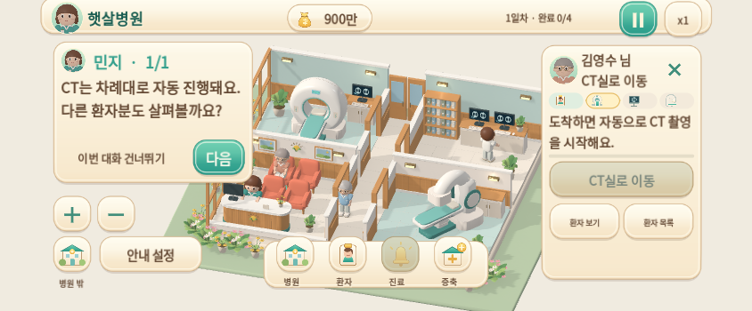
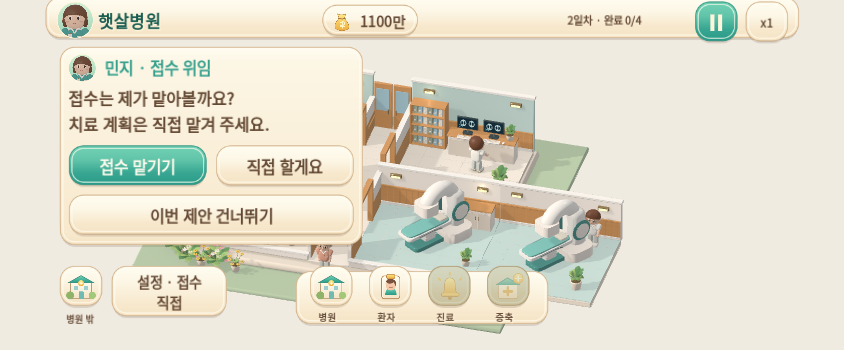
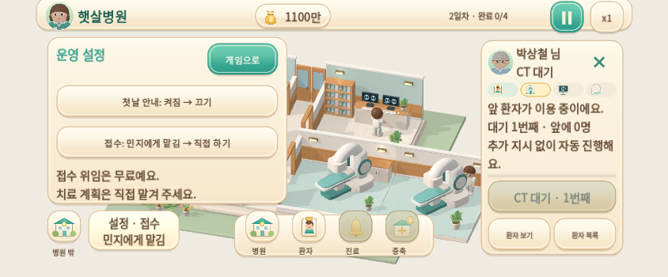
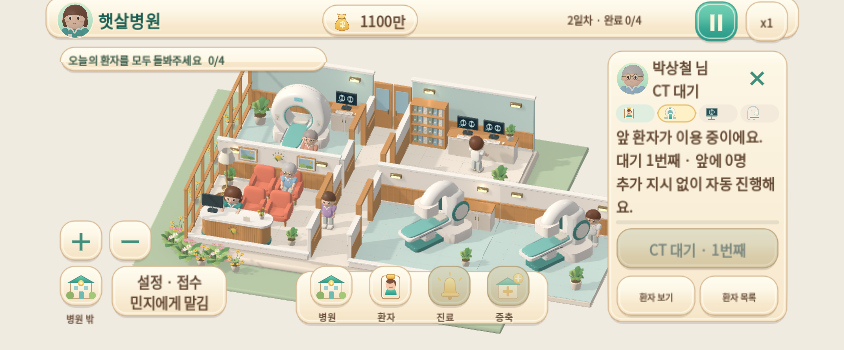
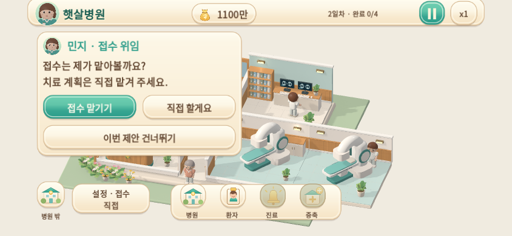
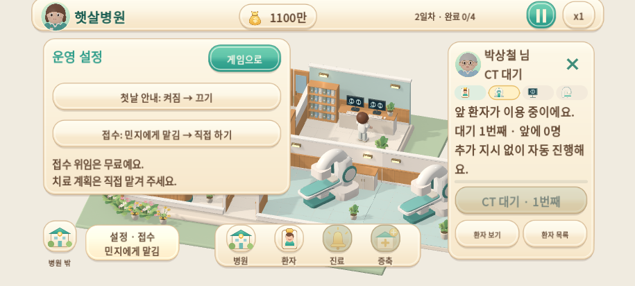
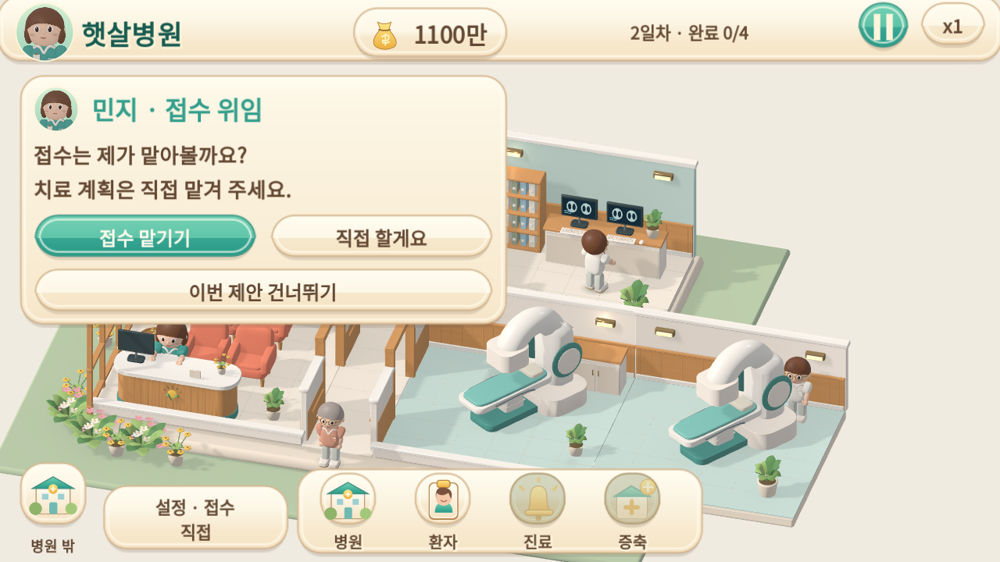
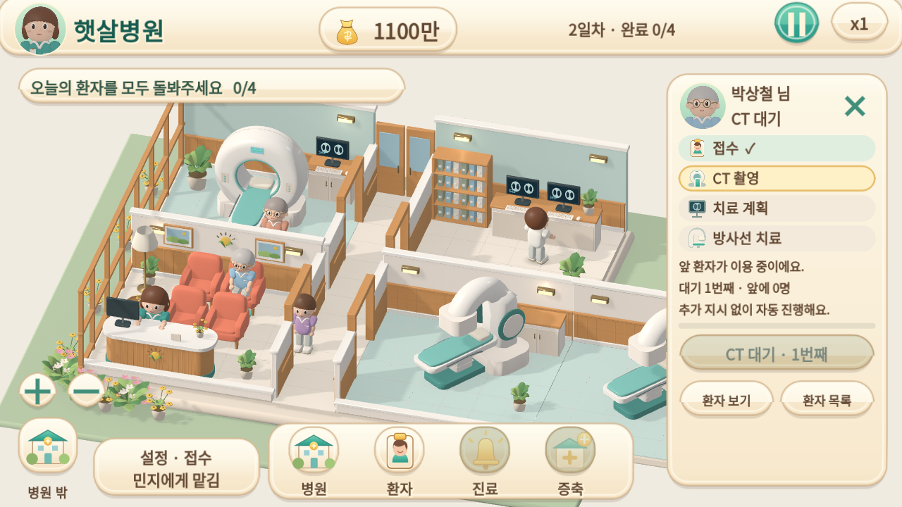
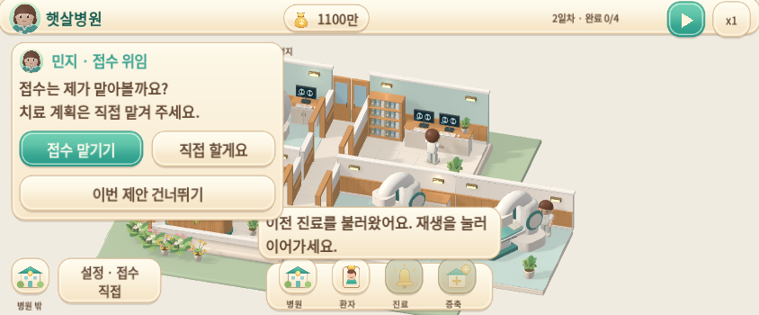
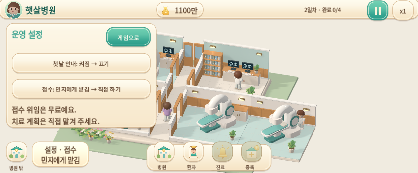
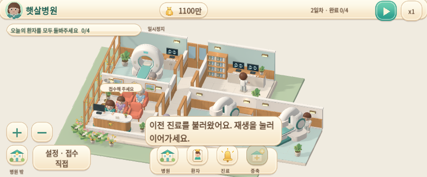